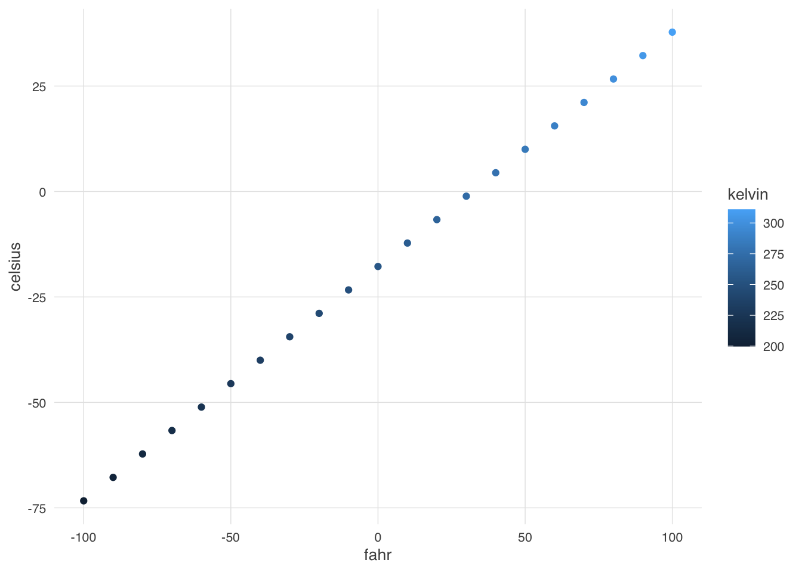

11 Session 10
11.1 Creating R Functions
Many people write R code as a single, continuous stream of commands, often drawn
from the R Console itself and simply pasted into a script. While any script
brings benefits over non-scripted solutions, there are advantages to breaking
code into small, reusable modules. This is the role of a function in R. In
this lesson, we will review the advantages of coding with functions, practice
by creating some functions and show how to call them, and then do some exercises
to build other simple functions.
11.1.0.1 Learning outcomes
- Learn why we should write code in small functions
- Write code for one or more functions
- Document functions to improve understanding and code communication
11.1.1 Why functions?
In a word:
- DRY: Don’t Repeat Yourself
By creating small functions that only one logical task and do it well, we quickly gain:
- Improved understanding
- Reuse via decomposing tasks into bite-sized chunks
- Improved error testing
Temperature conversion
Imagine you have a bunch of data measured in Fahrenheit and you want to convert that for analytical purposes to Celsius. You might have an R script that does this for you.
airtemps <- c(212, 30.3, 78, 32)
celsius1 <- (airtemps[1]-32)*5/9
celsius2 <- (airtemps[2]-32)*5/9
celsius3 <- (airtemps[3]-32)*5/9Note the duplicated code, where the same formula is repeated three times. This code would be both more compact and more reliable if we didn’t repeat ourselves.
Creating a function
Functions in R are a mechanism to process some input and return a value. Similarly
to other variables, functions can be assigned to a variable so that they can be used
throughout code by reference. To create a function in R, you use the function function (so meta!) and assign its result to a variable. Let’s create a function that calculates
celsius temperature outputs from fahrenheit temperature inputs.
fahr_to_celsius <- function(fahr) {
celsius <- (fahr-32)*5/9
return(celsius)
}By running this code, we have created a function and stored it in R’s global environment. The fahr argument to the function function indicates that the function we are creating takes a single parameter (the temperature in fahrenheit), and the return statement indicates that the function should return the value in the celsius variable that was calculated inside the function. Let’s use it, and check if we got the same value as before:
celsius4 <- fahr_to_celsius(airtemps[1])
celsius4## [1] 100celsius1 == celsius4## [1] TRUEExcellent. So now we have a conversion function we can use. Note that, because
most operations in R can take multiple types as inputs, we can also pass the original vector of airtemps, and calculate all of the results at once:
celsius <- fahr_to_celsius(airtemps)
celsius## [1] 100.0000000 -0.9444444 25.5555556 0.0000000This takes a vector of temperatures in fahrenheit, and returns a vector of temperatures in celsius.
Challenge
Now, create a function named celsius_to_fahr that does the reverse, it takes temperature data in celsius as input, and returns the data converted to fahrenheit. Then use that formula to convert the celsius vector back into a vector of fahrenheit values, and compare it to the original airtemps vector to ensure that your answers are correct. Hint: the formula for C to F conversions is celsius*9/5 + 32.
# Your code goes hereDid you encounter any issues with rounding or precision?
11.1.2 Documenting R functions
Functions need documentation so that we can communicate what they do, and why. The roxygen2 package provides a simple means to document your functions so that you can explain what the function does, the assumptions about the input values, a description of the value that is returned, and the rationale for decisions made about implementation.
Documentation in ROxygen is placed immediately before the function definition, and is indicated by a special comment line that always starts with the characters #'. Here’s a documented version of a function:
#' Convert temperature data from Fahrenheit to Celsius
#'
#' @param fahr Temperature data in degrees Fahrenheit to be converted
#' @return temperature value in degrees Celsius
#' @keywords conversion
#' @export
#' @examples
#' fahr_to_celsius(32)
#' fahr_to_celsius(c(32, 212, 72))
fahr_to_celsius <- function(fahr) {
celsius <- (fahr-32)*5/9
return(celsius)
}Note the use of the @param keyword to define the expectations of input data, and the @return keyword for defining the value that is returned from the function. The @examples function is useful as a reminder as to how to use the function. Finally, the @export keyword indicates that, if this function were added to a package, then the function should be available to other code and packages to utilize.
11.1.3 Summary
- Functions are useful to reduce redundancy, reuse code, and reduce errors
- Build functions with the
functionfunction - Document functions with
roxygen2comments
11.1.4 Examples: Minimizing work with functions
Functions can of course be as simple or complex as needed. They can be be very effective in repeatedly performing calculations, or for bundling a group of commands that are used on many different input data sources. For example, we might create a simple function that takes fahrenheit temperatures as input, and calculates both celsius and Kelvin temperatures. All three values are then returned in a list, making it very easy to create a comparison table among the three scales.
convert_temps <- function(fahr) {
celsius <- (fahr-32)*5/9
kelvin <- celsius + 273.15
return(list(fahr=fahr, celsius=celsius, kelvin=kelvin))
}
temps_df <- data.frame(convert_temps(seq(-100,100,10)))Once we have a dataset like that, we might want to plot it. One thing that we do
repeatedly is set a consistent set of display elements for creating graphs and plots.
By using a function to create a custom ggplot theme, we can enable to keep key
parts of the formatting flexible. FOr example, in the custom_theme function,
we provide a base_size argument that defaults to using a font size of 9 points.
Because it has a default set, it can safely be omitted. But if it is provided,
then that value is used to set the base font size for the plot.
custom_theme <- function(base_size = 9) {
ggplot2::theme(
axis.ticks = ggplot2::element_blank(),
text = ggplot2::element_text(family = 'Helvetica', color = 'gray30', size = base_size),
plot.title = ggplot2::element_text(size = ggplot2::rel(1.25), hjust = 0.5, face = 'bold'),
panel.background = ggplot2::element_blank(),
legend.position = 'right',
panel.border = ggplot2::element_blank(),
panel.grid.minor = ggplot2::element_blank(),
panel.grid.major = ggplot2::element_line(colour = 'grey90', size = .25),
legend.key = ggplot2::element_rect(colour = NA, fill = NA),
axis.line = ggplot2::element_blank()
)
}
library(ggplot2)
ggplot(temps_df, mapping=aes(x=fahr, y=celsius, color=kelvin)) +
geom_point() +
custom_theme(10)
In this case, we set the font size to 10, and plotted the air temperatures. The custom_theme
function can be used anywhere that one needs to consistently format a plot.
But we can go further. One can wrap the entire call to ggplot in a function,
enabling one to create many plots of the same type with a consistent structure. For
example, we can create a scatterplot function that takes a data frame as input,
along with a point_size for the points on the plot, and a font_size for the text.
scatterplot <- function(df, point_size = 2, font_size=9) {
ggplot(df, mapping=aes(x=fahr, y=celsius, color=kelvin)) +
geom_point(size=point_size) +
custom_theme(font_size)
}Calling that let’s us, in a single line of code, create a highly customized plot but maintain flexibiity via the arguments passed in to the function. Let’s set the point size to 3 and font to 16 to make the plot more legible.
scatterplot(temps_df, point_size=3, font_size = 16)Once these functions are set up, all of the plots built with them can be reformatted by changing the settings in just the functions, whether they were used to create 1, 10, or 100 plots.
11.2 Creating R Packages
11.2.1 Learning Objectives
In this lesson, you will learn:
- The advantages of using R packages for organizing code
- Simple techniques for creating R packages
- Approaches to documenting code in packages
11.2.2 Why packages?
Most R users are familiar with loading and utilizing packages in their work. And they know how rich CRAN is in providing for many conceivable needs. Most people have never created a package for their own work, and most think the process is too complicated. Really it’s pretty straighforward and super useful in your personal work. Creating packages serves two main use cases:
- Mechanism to redistribute reusable code (even if just for yourself)
- Mechanism to reproducibly document analysis and models and their results
Even if you don’t plan on writing a package with such broad appeal such as, say, ggplot2 or dplyr, you still might consider creating a package to contain:
- Useful utility functions you write i.e. a Personal Package. Having a place to put these functions makes it much easier to find and use them later.
- A set of shared routines for your lab or research group, making it easier to remain consistent within your team and also to save time.
- The analysis accompanying a thesis or manuscript, making it all that much easier for others to reproduce your results.
The usethis, devtools and roxygen2 packages make creating and maintining a package to be a straightforward experience.
11.2.4 Create a basic package
Thanks to the great usethis package, it only takes one function call to create the skeleton of an R package using create_package(). Which eliminates pretty much all reasons for procrastination. To create a package called
mytools, all you do is:
setwd('..')
create_package("mytools")✔ Setting active project to '/Users/jones/development/mytools'
✔ Creating 'R/'
✔ Creating 'man/'
✔ Writing 'DESCRIPTION'
✔ Writing 'NAMESPACE'
✔ Writing 'mytools.Rproj'
✔ Adding '.Rproj.user' to '.gitignore'
✔ Adding '^mytools\\.Rproj$', '^\\.Rproj\\.user$' to '.Rbuildignore'
✔ Opening new project 'mytools' in RStudioNote that this will open a new project (mytools) and a new session in RStudio server.
The create_package function created a top-level directory structure, including a number of critical files under the standard R package structure. The most important of which is the DESCRIPTION file, which provides metadata about your package. Edit the DESCRIPTION file to provide reasonable values for each of the fields,
including your own contact information.
Information about choosing a LICENSE is provided in the Extending R documentation.
The DESCRIPTION file expects the license to be chose from a predefined list, but
you can use it’s various utility methods for setting a specific license file, such
as the Apacxhe 2 license:
usethis::use_apache_license()✔ Setting License field in DESCRIPTION to 'Apache License (>= 2.0)'
✔ Writing 'LICENSE.md'
✔ Adding '^LICENSE\\.md$' to '.Rbuildignore'Once your license has been chosen, and you’ve edited your DESCRIPTION file with your contact information, a title, and a description, it will look like this:
Package: mytools
Title: Utility Functions Created by Matt Jones
Version: 0.1
Authors@R: "Matthew Jones <jones@nceas.ucsb.edu> [aut, cre]"
Description: Package mytools contains a suite of utility functions useful whenever I need stuff to get done.
Depends: R (>= 3.5.0)
License: Apache License (>= 2.0)
LazyData: true11.2.5 Add your code
The skeleton package created contains a directory R which should contain your source files. Add your functions and classes in files to this directory, attempting to choose names that don’t conflict with existing packages. For example, you might add a file environemnt_info.R that contains a function environment_info() that you might want to reuse. This one might leave something to be desired…, but you get the point… The
usethis::use_r() function will help set up you files in the right places. For example, running:
usethis::use_r("environment_info")● Modify 'R/environment_info.R'creates the file R/environment_info.R, which you can then modify to add the implementation fo the following function:
environment_info <- function(msg) {
print(devtools::session_info())
print(paste("Also print the incoming message: ", msg))
}If your R code depends on functions from another package, then you must declare so
in the Imports list in the DESCRIPTION file for your package. In our example
above, we depend on the devtools package, and so we need to list it as a dependency.
Once again, usethis provides a handy helper method:
usethis::use_package("devtools")✔ Adding 'devtools' to Imports field in DESCRIPTION
● Refer to functions with `devtools::fun()`11.2.6 Add documentation
You should provide documentation for each of your functions and classes. This is done in the roxygen2 approach of providing embedded comments in the source code files, which are in turn converted into manual pages and other R documentation artifacts. Be sure to define the overall purpose of the function, and each of its parameters.
#' A function to print information about the current environment.
#'
#' This function prints current environment information, and a message.
#'
#' @param msg The message that should be printed
#'
#' @keywords debugging
#'
#' @export
#'
#' @examples
#' environment_info("This is an important message from your sponsor.")
environment_info <- function(msg) {
print(devtools::session_info())
print(paste("Also print the incoming message: ", msg))
}Once your files are documented, you can then process the documentation using the document() function to generate the appropriate .Rd files that your package needs.
devtools::document()Updating mytools documentation
Updating roxygen version in /Users/jones/development/mytools/DESCRIPTION
Writing NAMESPACE
Loading mytools
Writing NAMESPACE
Writing environment_info.RdThat’s really it. You now have a package that you can check() and install() and release(). See below for these helper utilities.
11.2.7 Test your package
You can tests your code using the tetsthat testing framework. The ussethis::use_testthat()
function will set up your package for testing, and then you can use the use_test() function
to setup individual test files. For example, if you want to create tests of our
environment_info functions, set it up like this:
usethis::use_testthat()✔ Adding 'testthat' to Suggests field in DESCRIPTION
✔ Creating 'tests/testthat/'
✔ Writing 'tests/testthat.R'usethis::use_test("environment_info")✔ Writing 'tests/testthat/test-environment_info.R'
● Modify 'tests/testthat/test-environment_info.R'You can now add tests to the test-environment_info.R, and you can run all of the
tests using devtools::test(). For example, if you add a test to the test-environment_info.R file:
test_that("A message is present", {
capture.output(result <- environment_info("A unique message"))
expect_match(result, "A unique message")
})Then you can run the tests to be sure all of your functions are working using devtools::test():
devtools::test()Loading mytools
Testing mytools
✔ | OK F W S | Context
✔ | 2 | test-environment_info [0.1 s]
══ Results ════════════════════════════════════════════════════════════════════════════════════════════════════════════════════════════════════
Duration: 0.1 s
OK: 2
Failed: 0
Warnings: 0
Skipped: 0Yay, all tests passed!
11.2.8 Checking and installing your package
Now that your package is built, you can check it for consistency and completeness using check(), and then you can install it locally using install(), which needs to be run from the parent directory of your module.
devtools::check()
devtools::install()Your package is now available for use in your local environment.
11.2.10 More reading
- Hadley Wickham’s awesome book: R Packages
- Thomas Westlake’s blog Writing an R package from scratch